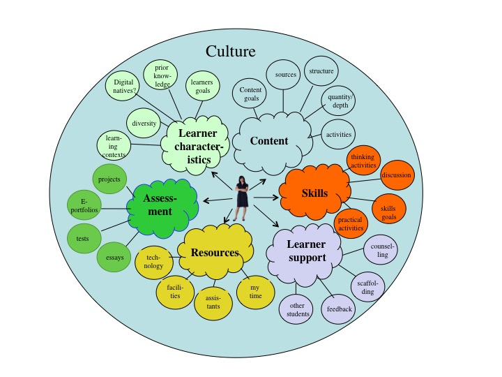
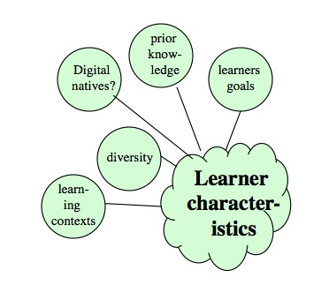
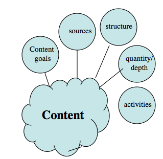
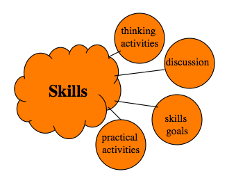
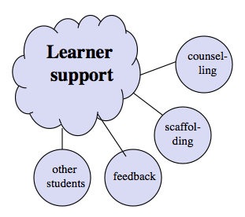
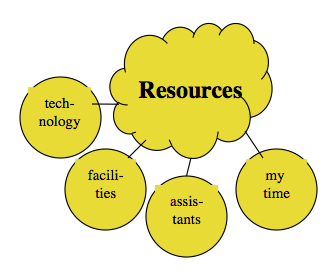
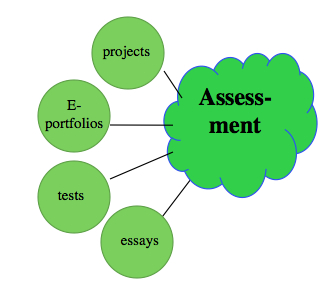

Appendix 1
Teaching in a Digital Age

Building a comprehensive and effective learning environment is an important condition for implementing teaching and learning for the digital age. This appendix discusses the key components of a learning environment and how these are affected by developments in a digital age. The chapter covers the following topics:
Also in this chapter you will find the following activities:
Chapters 1 to 12 provide a set of guidelines for teaching in a digital age. These guidelines though will not operate in a vacuum. Both teachers and learners are faced with a rapidly changing world, with new technology, new teaching approaches and external pressures from government, employers, parents, and the media. It is easy to be tossed around in such a stormy environment.
This appendix then attempts to place these guidelines within a pragmatic set of conditions, what I term an effective learning environment, to provide a stable but flexible context within which the guidelines outlined in this book can be applied. I have chosen to put this in as an appendix, as it essentially draws on content set out in the rest of the book, but for the guidelines to be effective, they need to be applied within a rich and coherent learning environment.
‘Learning environment refers to the diverse physical locations, contexts, and cultures in which students learn. Since students may learn in a wide variety of settings, such as outside-of-school locations and outdoor environments, the term is often used as a more accurate or preferred alternative to classroom, which has more limited and traditional connotations—a room with rows of desks and a chalkboard, for example.
The term also encompasses the culture of a school or class—its presiding ethos and characteristics, including how individuals interact with and treat one another—as well as the ways in which teachers may organize an educational setting to facilitate learning…..’
The Glossary of Educational Reform, 29 August, 2014
This definition recognises that students learn in many different ways in very different contexts. Since learners must do the learning, the aim is to create a total environment for learning that optimises the ability of students to learn. There is of course no single optimum learning environment. There is an infinite number of possible learning environments, which is what makes teaching so interesting.
Developing a total learning environment for students in a particular course or program is probably the most creative part of teaching. While there is a tendency to focus on either physical institutional learning environments (such as classrooms, lecture theatres and labs), or on the technologies used to to create online personal learning environments (PLEs), learning environments are broader than just these physical components. They will also include:
Figure A.2.2 illustrates one possible learning environment from the perspective of a teacher or instructor. A teacher may have little or no control over some components, such as learner characteristics or resources, but may have full control over other components such as choice of content and how learners will be supported. Within each of the main components there are a set of sub-components that will need to be considered. In fact, it is in the sub-components (content structure, practical activities, feedback, use of technology, assessment methods, and so on) where the real decisions need to be made.
I have listed just a few components in Figure A.2.2 and the set is not meant to be comprehensive. For instance it could have included other components, such as developing ethical behaviour, institutional factors, or external accreditation, each of which might also affect the learning environment in which a teacher or instructor has to work. Creating a model of a learning environment then is a heuristic device that aims to provide a comprehensive view of the whole teaching context for a particular course or program, by a particular instructor or teacher with a particular view of learning. Once again, the choice of components and their perceived importance will be driven to some extent by personal epistemologies and beliefs about knowledge, learning and teaching methods.
Lastly, I have deliberately suggested a learning environment from the perspective of a teacher, as the teacher has the main responsibility for creating an appropriate learning environment, but it is also important to consider learning environments from the learners’ perspectives. Indeed, adult or mature learners are capable of creating their own, personal, relatively autonomous learning environments.
The significant point is that it is important to identify those components that need to be considered in teaching a course or program, and in particular that there are other components besides content or curriculum. Each of the key components of the learning environment I have chosen as an example are discussed briefly in the following sections, with a focus on the components of a learning environment that are particularly relevant for a digital age.

Probably nothing more reflects changes to teaching in a digital age than the change in learner characteristics.
I noted in Chapter 1 (Section 1.2) that in developed countries such as Canada, public ‘post-secondary institutions are expected to represent the same kind of socio-economic and cultural diversity as in society at large, rather than being institutions reserved for an elite minority.’ In an age where economic development is tightly associated with higher levels of education, the goal now is to bring as many students as possible to the standards required, rather than focus on just the needs of the most able students. This means finding ways of helping a very wide range of students with very different levels of ability and/or prior knowledge to succeed. One size clearly does not fit all today. Dealing with an increasingly diverse student population is perhaps the greatest of all challenges then that teachers and instructors face in a digital age, particularly but not exclusively at a post-secondary level. This is not something for which instructors primarily qualified in subject matter expertise are well prepared.
A combination of good design and an appropriate use of technology will greatly facilitate the personalization of learning, allowing for instance for different students to work at different speeds, and to focus learning on students’ specific interests and needs, thus ensuring engagement and motivation for a diverse range of students. However, the first and perhaps most important step is for instructors to know their students, and in particular, to identify from the vast range of information regarding students and their differences, which are the most important for the design of teaching and learning in a digital age. I list some of the characteristics that I think are important from the perspective of designing teaching.
Two factors make the work and home context an important consideration in the design of teaching and learning: students are increasingly working while studying (about half of all Canadian post-secondary students also work, and those that do work average 16 hours a week – Marshall, 2011); and the age range of students continues to spread, with the average age of students slowly increasing (at the University of British Columbia, the average age of undergraduates is 20, but more than one third of all their students are over 24 years old. The mean age for graduate students in 2014 was 31 – UBC Vancouver Fact Sheet, 2014.)
There are several reasons for the average age of students increasing, at least in North America:
Partly or fully employed students, or students with families, increasingly need more flexibility in their studying, and especially avoiding long commutes between home, work and college. These students increasingly want hybrid or fully online courses, and smaller modules, certificates or programs that they can fit around their work and family life.
Understanding the motivation of students and what they expect to get out of a course or program should also influence the design of a course or program. For academic learning, it is often necessary to find ways to move students whose approach to learning is initially driven by extrinsic rewards such as grades or qualifications to an approach that engages and motivates students in the subject matter itself. Potential students already with a post-secondary qualification and a good job may not want to work through a pre-determined set of courses but may want just specific areas of content from existing courses, tailored to meet their needs (for instance, on demand and delivered online). Thus it is important to have some kind of knowledge or understanding of why learners are likely to take your course or program, and what they are hoping to get out of it.
Future learning often depends on students having prior knowledge or an ability to do things at a certain level. Teachers aim to bridge the difference between what a learner can do without help and what he or she can do with help, what Vygotsky (1978) termed the zone of proximal development. If the difficulty level of the teaching is aimed too far beyond the capability or prior knowledge and skills of a learner, then learning fails to occur.
However, the more diverse the students in a program, the more diverse the knowledge and skill levels they are likely to bring with them. Indeed, lifelong learners, or new immigrants repeating a subject because their foreign qualifications are not recognised, may bring specialist or advanced knowledge that can be drawn on to enrich the learning experience for everyone. At the same time, some students may not have the same basic knowledge as others in a course and will need more help. In such a context it is important to design the learning experience so that it is flexible enough to accommodate students with a wide range of prior knowledge and skills.
Most students today have grown up with digital technologies such as mobile phones, tablets and social media, including Facebook, Twitter, blogs and wikis. Prensky (2010) and others (e.g. Tapscott, 2008) argue that not only are such students more proficient in using such technologies than previous generations, but that they also think differently (Tapscott, 2008).
However, it is particularly important to understand that students themselves vary a great deal in their use of social media and new technologies, that their use is largely driven by social and personal demands, and their use of digital technologies does not naturally flow across into educational use. They will use new technologies and social media for learning though where instructors make a good case for it and when students can see that the use of digital media will directly help them in their studies. For this to happen though deliberate design choices are required on the part of the instructor. (For more on the issue of digital natives, see Chapter 8, Section 2.)
The work and home context, learners’ goals, and students’ prior knowledge and skills (including their competence with digital media) are some of the critical factors that should influence the design of teaching. For some instructors, other characteristics of learners, such as learning styles, gender differences or cultural background, may be more important, depending on the context. Whatever the context, good design in teaching requires good information about the learners we are going to teach, and in particular good design needs to address the increasing diversity of our students.
Marshall, K. (2011) Employment patterns of post-secondary students, Ontario Undergraduate Student Alliance, November 11
Prensky, M. (2001) ‘Digital natives, Digital Immigrants’ On the Horizon Vol. 9, No. 5
Tapscott, D. (2008) Grown Up Digital New York: McGraw Hill
Vygotsky, L. (1978) Mind in Society: Development of Higher Psychological Processes Cambridge MA: Harvard University Press

For most teachers and instructors, content remains a key focus. Content includes facts, ideas, principles, evidence, and descriptions of processes or procedures. A great deal of time is spent on discussing what content should be included in the curriculum, what needs to be covered in a course or a program, what content sources such as text-books students should access, and so on. Teachers and instructors often feel pressured to cover the whole curriculum in the time available. In particular, lecturing or face-to-face classes remain a prime means for organising and delivering content.
The case for balancing content with skills development was made several times through the book, but issues around content remain critically important in teaching. In particular, instructors need to ask themselves these two questions: ‘What specific content will add value to the overall goals of this course or program? What content would be nice for students to cover, but could be avoided if necessary?’
Instructors in post-secondary education tend to take content for granted – this is what we teach. However, it is important, when designing teaching for a digital age, to be clear in our goals for teaching content. Why do we require students to know facts, ideas, principles, evidence, and descriptions of processes or procedures? Is learning specific content a goal in itself, or is it a means to an end? For instance, is there an intrinsic value in knowing the periodic table, or the dates of battles, or are they means to an end, such as designing experiments or understanding why French is an official language in Canada?
The question is important, because in a digital age, some would argue that learning or memorising content becomes less important or even irrelevant when it is easy just to look up facts or definitions or equations. Cognitivists will argue that content needs to be framed or put in context for it to have meaning. Does content need to be learned solely to enable us to do things, such as solve problems, or make decisions, and do we need only to draw on content as and when needed, as it is now so easy to access?
Probably more important than the teacher or instructor being clear on why content is being taught is for the students to understand this. One way of stating this is to ask: what value is added to the overall goals of this course or program by teaching this specific content? Do students need to memorise this content, or know where to find it, and when it is important to use it? This means of course having very clear goals for the course or program as a whole.
In many contexts, instructors have little choice over content. External bodies, such as accreditation agencies, state or provincial governments, or professional licensing boards, may well dictate what content a particular course or program needs to cover. However, the rapid growth of scientific and technological knowledge increasingly challenges the idea of a fixed body of content that students must learn. Engineering and medical programs struggle to cover even in six or eight years of formal education all the knowledge that professionals need to know to practice effectively. Professionals will need to go on learning well past graduation if they are to keep up with new developments in the field.
In particular, covering content quickly or overloading students with content are not effective teaching strategies, because even working harder all waking hours will not enable students in these subject domains to master all the information they need in their professions. Specialization has been a traditional way of handling the growth of knowledge, but that does not help in dealing with complex problems or issues in the real world, which often require inter-disciplinary and broader based approaches. Thus instructors need to develop strategies that enable students to cope with the massive and growing amounts of knowledge in their field.
One way to handle the problem of knowledge explosion is to focus on the development of skills, such as knowledge management, problem-solving and decision-making. However, these skills are not content-free. In order to solve problems or make decisions, you need access to facts, principles, ideas, concepts and data. To manage knowledge, you need to know what content is important and why, where to find it, and how to evaluate it. In particular there may be core or basic knowledge or content that needs to be mastered for many if not most of their professional activities. One teaching skill then will be the ability to differentiate between essential and desirable areas of content, and to ensure that whatever is done to develop skills, in the process core content is covered.
Another critical decision for teachers in a digital age is where students should source or find content. In medieval times, books were scarce, and the library was an essential source of content not only for students but also for professors. Professors had to select, mediate and filter content because the sources of content were extremely scarce. We are not in that situation today. Content is literally everywhere: on the Internet, in social media, on mass media, in libraries and books, as well as in the lecture theatre.
Often, a great deal of time is spent in departmental or program meetings on discussing what textbooks or articles students should be required to read. Part of the reason for selecting or limiting content is to limit the cost to students, as well as the need to focus on a limited range of material within a course or program. But today, content is increasingly open, free and available on demand over the Internet. Most students will need to continue learning after graduation. They will increasingly resort to digital media for their sources of knowledge. Therefore when deciding on content we should be considering:
(a) to what extent does the instructor need to choose the content for a program (other than a broad set of curriculum topics) and to what extent should students be free to choose both content and the source of that content?
(b) to what extent does the instructor need to deliver content themselves, such as through a lecture or Powerpoint slides, when content is so freely available elsewhere? What is the added value you are providing by delivering the content yourself? Could your time be better used in other ways?
(c) to what extent do we need to provide criteria or guidelines to students for choosing and using openly accessible content, and what is the best way to do that?
When answering such questions, we should also be asking whether our decisions will help students manage content better themselves after graduating.
One of the most critical supports that teachers and instructors provide is to structure the sequence and inter-relationship of different content elements. I include within structure:
Traditionally, content has been structured by breaking a course into a number of topic-related classes delivered in a particular sequence, and within the classes, by instructors ‘framing’ and interpreting content. However, new technologies provide alternative means to structure content. Learning management systems such as Blackboard or Moodle enable instructors to select and sequence content material, which students can access anywhere, at any time – and in any order. The availability of a wide range of content over the Internet, and the ability to collect and sort content through blogs, wikis, and e-portfolios, enable students increasingly to impose their own structures on content.
Students need some form of structure within content areas, partly because some things need to be learned in ‘the right order’, partly because without structure content becomes a jumble of unrelated topics, and partly because students can’t know or work out what is important and what is not within a total content domain, at least until they have started studying it. Novice students in particular need to know what they must study each week. There is a good deal of research evidence to suggest that novice students benefit a great deal from tightly structured, sequential approaches to content, but as they become more knowledgeable or experienced in the domain, they seek to develop their own approaches to the selection, ordering and interpretation of content.
Therefore in deciding on the structure of the content in a course or program instructors need to ask:
(a) how much structure should I provide in managing content, and how much should I leave to the students?
(b) how do new technologies affect the way I should structure the content? Will they enable me to provide more flexible structures that will suit a diverse range of student needs?
Similarly, when answering these questions we should ask how important it is for students themselves to be able to structure content, and whether our answers to the two questions above will further help them to do this.
Lastly, what activities do we need to ask students to do to help them learn content? To answer this question will mean returning to the goals for learning content and the overall goals of the course:
We shall see that technology enables us to widen considerably the range of activities that students can use to master content, but these need to be related to the learning goals set for the course of program. Without a planned set of activities, though, content may just enter the brain one day and leave it the next.
Even or especially in a digital age, content, in terms of things to know, remains critically important, but in a digital age the role of content is subtly changing, in some ways becoming a means to other ends, such as skills development, rather than an end in itself. Because of the rapid growth in knowledge in nearly all subject areas, being clear about the role and purpose of content in a course, and communicating that effectively to students, becomes particularly important.

In Chapter 1, Section 1.2, I listed some of the skills that graduates need in a digital age, and argued that this requires a greater focus on developing such skills, at all levels of education, but particularly at a post-secondary level, where the focus is often on specialised content. Although skills such as critical thinking, problem solving and creative thinking have always been valued in higher education, the identification and development of such skills is often implicit and almost accidental, as if students will somehow pick up these skills from observing faculty themselves demonstrating such skills or through some form of osmosis resulting from the study of content.
It is of course somewhat artificial to separate content from skills, because content is the fuel that drives the development of intellectual skills. My aim here is not to downplay the importance of content, but to ensure that skills development receives as much focus and attention from instructors, and that we approach intellectual skills development in the same rigorous and explicit way as apprentices are trained in manual skills.
Thus a critical step is to be explicit about what skills a particular course or program is trying to develop, and to define these goals in such a way that they can be implemented and assessed. In other words it is not enough to say that a course aims to develop critical thinking, but to state clearly what this would look like in the context of the particular course or content area, in ways that are clear to students. In particular skills should be defined in such a way that they can be assessed, and students should be aware of the criteria or rubrics that will be used for assessment. Skills development is discussed throughout the book, but particularly in:
A skill is not binary, in the sense that you either have it or you don’t. There is a tendency to talk about skills and competencies in terms of novice, intermediate, expert, and master, but in reality skills require constant practice and application and there is, at least with regard to intellectual skills, no final destination.
So it is critically important when designing a course or program to design activities that require students to develop, practice and apply thinking skills on a continuous basis, preferably in a way that starts with small steps and leads eventually to larger ones. There are many ways in which this can be done, such as written assignments, project work, and focused discussion, but these thinking activities need to be designed, then implemented on a consistent basis by the instructor.
It is a given in vocational programs that students need lots of practical activities to develop their manual skills. This though is equally true for intellectual skills. Students need to be able to demonstrate where they are along the road to mastery, get feedback on it, and retry as a result. This means doing work that enables them to practice specific skills.
In the history scenario (Scenario E), students had to cover and understand the essential content in the first three weeks, do research in a group, develop an agreed project report, in the form of an e-portfolio, share it with other students and the instructor for comments, feedback and assessment, and present their report orally and online. Ideally, they will have the opportunity to carry over many of these skills into other courses where the skills can be further refined and developed. Thus, with skills development, a longer term horizon than a single course will be necessary, so integrated program as well as course planning is important.
Discussion is a very important tool for developing thinking skills. However, not any kind of discussion. It was argued in Chapter 2 that academic knowledge requires a different kind of thinking to everyday thinking. It usually requires students to see the world differently, in terms of underlying principles, abstractions and ideas. Thus discussion needs to be carefully managed by the instructor, so that it focuses on the development of skills in thinking that are integral to the area of study. This requires the instructor to plan, structure and support discussion within the class, keeping the discussions in focus, and providing opportunities to demonstrate how experts in the field approach topics under discussion, and comparing students’ efforts. The role of discussion is covered more fully in Chapter 4, Section 4 and Chapter 11, Section 10.
There are many opportunities in even the most academic courses to develop intellectual and practical skills that will carry over into work and life activities in a digital age, without corrupting the values or standards of academia. Even in vocational courses, students need opportunities to practice intellectual or conceptual skills such as problem-solving, communication skills, and collaborative learning. However, this won’t happen merely through the delivery of content. Instructors need to:
This is a very brief discussion of how and why skills development should be an integral part of any learning environment.

Learner support focuses on what the teacher or instructor can or should do to help learners beyond the formal delivery of content, or skills development. Learner support covers a wide range of functions, and is discussed throughout the book, but particularly in:
Here my focus is on indicating why it is an essential component of an effective learning environment, and to describe briefly some of the main activities associated with learner support.
I use the term scaffolding to cover the many functions of an instructor in diagnosing and responding to learners’ difficulties, including:
These activities normally take the form of personal interventions and communication between an instructor and an individual or a group of students, in face-to-face contexts or online. These activities tend not to be pre-planned, requiring a good deal of spontaneity and responsiveness on the part of the teacher or instructor. Scaffolding is usually a means of individualising the learning, enabling student differences in learning to be better accommodated as they occur.
This could be seen as a sub-category of scaffolding, but it covers the role of providing feedback on student performance of activities such as writing assignments, project work, creative activities, and other student activities beyond the current and perhaps future scope of automated computer feedback. Again, the instructor’s role here is to provide more individualisation of feedback to deal with more qualitatively assessed student activities, and may or may not be associated with formal assessment or grading.
As well as direct support within their academic studying, learners often need help and guidance on administrative or personal issues, such as whether to repeat a course, delay an assignment because of sickness in the family, or cancel enrollment in a course and postpone it to another date. This potential source of help needs to be included in the design of an effective learning environment, with the aim of doing all that can be done to ensure that students succeed while meeting the academic standards of a program.
Other students can be a great support for learners. Much of this will happen informally, through students talking after class, through social media, or helping each other with assignments. However, instructors can make more formal use of other students by designing collaborative learning activities, group work, and designing online discussions so that students need to work together rather than individually.
Good design can substantially reduce demand for learner support, by ensuring clarity and by building in appropriate learning activities. Students also vary enormously in their need for support in learning. Many lifelong learners, who have already been through a post-secondary education, have families, careers and a great deal of life experience, can be self-managed, autonomous learners, identifying what they need to learn and how best to do this. At the other extreme, there are students for whom the formal school system was a disaster, who lack basic learning skills or foundations, such as reading, writing and mathematical skills, and therefore lack confidence in learning. These will need a lot of support to succeed.
However the vast majority of learners are somewhere in the middle of the spectrum, occasionally running into problems, unsure what standards are expected, and needing to know how they are doing. Indeed, there is a good deal of research that indicates that ‘instructor presence’ is associated with student success or failure in a course, at least in online learning. Where students feel the instructor is not present, both learner performance and completion rates decline. For such students, good, timely learner support is the difference between success and failure.
It should be noted that the need for good learner support, and the ability to provide it, is not dependent on the medium of instruction. The kind of credit online courses that have been designed and delivered long before MOOCs came along often provided high levels of learner support, through having a strong instructor presence and careful design to ensure students were supported.
At the same time, although computer programs can go some way to providing learner support, many of the most important functions of learner support associated with high-level conceptual learning and skills development still need to be provided by an expert teacher or instructor, whether present or at a distance. Furthermore, this kind of learner support is difficult to scale up, as it tends to be relatively labour intensive and requires instructors with a deep level of knowledge within the subject area. Thus, the need to provide adequate levels of learner support cannot just be wished away, if we are to achieve successful learning on a large scale.
This may seem obvious to teachers, but the importance of learner support for student success is not always recognised or appreciated, as can be seen from the design of many MOOCs, and the reaction of politicians and the media to the cost savings promised by MOOCs, which are entirely a function of eliminating learner support. There are also different attitudes from instructors and institutions towards the need for learner support. Some faculty may believe that ‘It’s my job to instruct and yours to learn’; in other words, once students are presented with the necessary content through lectures or reading, the rest is up to them.
Nevertheless, the reality is that in any system with a wide diversity of students, as is so common today, teachers and instructors will have to provide effective learner support, unless we are willing to sacrifice the future of many thousands of learners.

As in the case of learner characteristics, you may not have a lot of control over the resources available, but resources (or the lack of them) will impact a great deal on the design of teaching. Fighting for appropriate resources is often one of the most challenging tasks for many teachers and instructors. The influence of resources on design is also discussed throughout the book, but particularly in:
Teaching assistance refers to adjunct or sessional instructors, teaching assistants, librarians, and technical support staff, including instructional designers, media producers and IT technical support. An institution may have policies or guidelines about how many support staff an instructor can have for a set number of students.
It is important to think about the best way to use supporting staff. In universities, the tendency is to chop a large class into sections, with each section with its own sessional instructor or teaching assistant, which then operate relatively independently, with often large differences in the quality of the teaching in different sections, depending on the experience of the instructor. However, new technologies enable the teaching to be organised differently and more consistently.
For instance, a senior professor may determine the overall curriculum and assessment strategy, and working with an instructional designer, provide the overall design of a course. Sessionals and/or teaching assistants then are hired to deliver the course either face-to-face or online or more often a mix of both, under the supervision of the senior professor (see the National Center for Academic Transformation for examples). Flipped classrooms are another way to organise resources differently (see Blended Learning in Introductory Psychology as an example.)
Furthermore, online learning may bring in more revenues through government grants for extra students and/or direct tuition revenue, so there may be economies of scale which would enable the institution to hire more sessionals from the extra revenues generated by the additional online students. Indeed, there are now examples of fully online masters programs more than covering the full cost, including the hiring of research professors to teach the program, from tuition revenues alone (the University of British Columbia’s online Master in Educational Technology is one example). Thus design can influence resources, as well as the other way round.
This refers primarily to physical facilities available to an instructor and students, such as classrooms, labs, and the library. These may provide constraints on the teaching, because for example the physical set-up of a lecture hall or classroom may limit opportunities for discussion or project work, or an instructor may be forced to organise the teaching around three hours of lecturing and six hours of labs per week, to ‘fit’ with broader institutional requirements for classroom allocations (see How Online Learning is Going to Affect Classroom Design regarding attempts to re-design classrooms for the digital age.)
Online learning can free instructors and students from such rigid physical constraints, but there is still a need for structure and organization of units or modules of teaching, even or especially when teaching online.
The development of new technologies, and especially learning management systems, lecture capture, and social media, have radical implications for the design of teaching and learning. This is discussed in much more depth in Chapters 6, 7 and 8, but for the purpose of describing an effective learning environment, the technologies available to an instructor can contribute immensely to creating interactive and engaging learning environments for students. However, it is important to emphasise that technology is just one component within any effective learning environment, and needs to be balanced and integrated with all the other components.
The greatest and most precious resource of all! Building an effective learning environment is an iterative process, but in the end, the teaching design, and to some extent the learning environment as a whole, will be dependent on the time available from the instructor (and his or her team) for teaching. The less time available, the more restrictive the learning environment is likely to be, unless the instructor’s time is very carefully managed. Again, though, good design takes into account the time available for teaching (see Chapter 11, Section 9 in particular).
Nothing drives an instructor to distraction more than trying to manage with inadequate resources. Certainly, if a teacher or instructor is allocated a class of 200 students, in a large lecture hall, with no additional teaching support, then the instructor is going to have difficulty creating a rich and effective learning environment, because the lack of resources limits the options. On the other hand, an instructor with 30 students, access to a wide range of technology, freedom to organise and structure the curriculum, and with support from an instructional designer and a web designer, has the luxury of exploring a range of different designs and possible learning environments.
Nevertheless it is probably when resources are most scarce that the most creativity is needed to break out of traditional teaching models. New technology, if properly used and available, does enable even large classes with otherwise few resources to be designed with a relatively rich learning environment. This is discussed in more detail in Chapter 12, Section 5. At the same time, expectations need to be realistic. Providing adequate learner support with an instructor:student ratio of 1:200 or more will always be a challenge. Improvements are possible through re-design – but not miracles. (For more on increasing productivity through online teaching, see Productivity and Online Learning Redux.)

‘I was struck by the way assessment always came at the end, not only in the unit of work but also in teachers’ planning….Assessment was almost an afterthought…
Teachers…are being caught between competing purposes of …assessment and are often confused and frustrated by the difficulties that they experience as they try to reconcile the demands.’
Earle, 2003
Because assessment is a huge topic, it is important to be clear that the purpose of this section is:
(a) to look at one of the components that constitute an effective and comprehensive learning environment, and;
(b) briefly to examine the extent to which assessment is or should be changing in a digital age.
Assessment again is discussed throughout the book, but particularly in:
However, assessment requires a section on its own. Probably nothing drives the behaviour of students more than how they will be assessed. Not all students are instrumental in their learning, but given the competing pressures on students’ time in a digital age, most ‘successful’ learners focus on what will be examined and how they can most effectively (which means for students in as little time as possible) meet the assessment requirements. Therefore decisions about methods of assessment will in most contexts be fundamental to building an effective learning environment.
There are many different reasons for assessing learners. It is important to be clear about the purpose of the assessment, because it is unlikely that one single assessment instrument will meet all assessment needs. Here are some reasons (you can probably think of many more):
I have deliberately ordered these in importance for creating an effective learning environment.
The form the assessment takes, as well as the purpose, will be influenced by the instructors’ or examiners’ underlying epistemology: what they believe constitutes knowledge, and therefore how students need to demonstrate their knowledge. The form of assessment should also be influenced by the knowledge and skills that students need in a digital age, which means focusing as much on assessing skills as knowledge of content. Thus continuous or formative assessment will be as important as summative or ‘end-of-course’ assessment.
There is a wide range of possible assessment methods. I have selected just a few to illustrate how technology can change the way we assess learners in ways that are relevant to a digital age:
A question to be considered is whether there is a need for assessment of learning in the first place. There may be contexts, such as a community of practice, where learning is informal, and the learners themselves decide what they wish to learn, and whether they are satisfied with what they have learned. In other cases, learners may not want or need to be formally evaluated or graded, but do want or need feedback on how they are doing with their learning. ‘Do I really understand this?’ or ‘How am I doing compared to other learners?’
However, even in these contexts, some informal methods of assessment by experts, specialists or more experienced participants could help other participants extend their learning by providing feedback and indicating the level of competence or understanding that a participant has achieved or has yet to accomplish. Lastly, students themselves can extend their learning by participating in both self-assessment and peer assessment, preferably with guidance and monitoring from a more knowledgeable or skilled instructor.
This method is good for testing ‘objective’ knowledge of facts, ideas, principles, laws, and quantitative procedures in mathematics, science and engineering etc., and are cost-effective for these purposes. This form of testing though tends to be limited for assessing high-level intellectual skills, such as complex problem-solving, creativity, and evaluation, and therefore less likely to be useful for developing or assessing many of the skills needed in a digital age.
This method is good for assessing comprehension and some of the more advanced intellectual skills, such as critical thinking, but it is labour intensive, open to subjectivity, and not good for assessing practical skills. Experiments are taking place with automated essay marking, using developments in artificial intelligence, but so far automated essay marking still struggles to identify valid semantic meaning (for balanced and more detailed accounts of the current state of machine grading, see Mayfield, 2013 and Parachuri, 2013).
Project work encourages the development of authentic skills that require understanding of content, knowledge management, problem-solving, collaborative learning, evaluation, creativity and practical outcomes. Designing valid and practical project work needs a high level of skill and imagination from the instructor.
E-portfolios enable self-assessment through reflection, knowledge management, recording and evaluation of learning activities, such as teaching or nursing practice, and recording of an individual’s contribution to project work (as an example, see the use of e-portfolios in Visual Arts and Built Environment at the University of Windsor.); e-portfolios are usually self-managed by the learner but can be made available or adapted for formal assessment purposes or job interviews.
These facilitate the practice of skills, such as
These methods are currently expensive to develop, but cost-effective with multiple use, where they replace the use of extremely expensive equipment, where operational activities cannot be halted for training purposes, or where available as open educational resources.
It can be seen that some of these assessment methods are both formative, in helping students to develop and increase their competence and knowledge, as well as summative, in assessing knowledge and skill levels at the end of a course or program. In a digital age, assessment and teaching tends to become even more closely integrated and contiguous.
Nothing is likely to drive student learning more than the method of assessment. At the same time, assessment methods are rapidly changing and are likely to continue to change. Assessment in terms of skills development needs to be both ongoing and continuous as well as summative. There is an increasing range of digitally based tools that can enrich the quality and range of student assessment. Therefore the choice of assessment methods, and their relevance to other components, are vital elements of any effective learning environment.
Earle, L. (2003) Assessment as Learning Thousand Oaks CA: Corwin Press
Mayfield, E. (2013) Six ways the edX Announcement Gets Automated Essay Grading Wrong, e-Literate, April 8
Parachuri, V. (2013) On the automated scoring of essays and the lessons learned along the way, vicparachuri.com, July 31
Within every learning environment there is a prevailing culture that influences all the other components. In most learning environments, culture is often taken for granted or may be even beyond the consciousness of learners or even teachers. I will try to show why faculty, instructors and teachers should pay special attention to cultural factors, so that they can make conscious decisions about how the different components of a learning environment are implemented. Although the concept of culture may seem a little abstract at this stage, I will show how critical it is for designing an effective online learning environment,
I define culture as
the dominant values and beliefs that influence decision-making.
The choice of content, the skills and attitudes that are promoted, the relationship between instructors and students, and many other aspects of a learning environment, will all be deeply influenced by the prevailing culture of an institution or class (used to mean any grouping of students and a teacher). Thus in a learning environment, every one of the components I described will be influenced by the dominant culture.
For instance, parents tend to place their children in schools that reflect their owns values and beliefs, and so the characteristics of learners in that school will also often be influenced by the culture not only of their parents but also of their school. This is one of the many ways that culture can be self-reinforcing.
I first noticed the impact of different cultures many years ago, when I was doing research in the U.K. on the administration of large comprehensive (high) schools. Given that these schools had deliberately been created by a left-of-centre government in Britain in the 1960s to provide equal access to secondary education for all, and that these schools had many things in common (their size, their curricula, the idea that every student should have the same educational opportunities) one would have expected that they all would have had a similar prevailing culture. However, I visited over 50 such schools to collect information on the how they were managed and the key issues they faced, and every one was different.
Some were created from formerly highly selective grammar schools, and operated on a strict system of sorting students by tests, so that successful students would go up a level and the weakest students would drop down a level, in order to identify the best prospects for university. Here the dominant value was academic excellence.
Some schools were single sex (I am still puzzled by how a school segregated by sex could be considered ‘comprehensive’). One of the key objectives of a girls’ school I visited was to teach girls about ‘poise’. (This led to a very confused miscommunication between me and the headmistress, as I thought she had said ‘boys’.) Here the dominant value was on developing ‘ladylike qualities’.
Others were inner city schools, where the focus was often on bringing the best out of each child, whatever their abilities. In such schools, each class would contain children with as wide a range of abilities as possible, but they were often rowdy, raucous places in comparison to the more elite-oriented institutions. Here the emphasis was on inclusiveness and equal opportunity.
The differing cultures of each of these schools was so strong I could sometimes detect it just by walking in the door, by the way students reacted with staff and each other in the corridors, or even by the way the students walked (or ran).
Whether you consider culture to be a good or bad influence in a learning environment will depend on whether you share or reject the underlying values and beliefs of the dominant culture. Residential schools in Canada into which aboriginal children were often forcibly placed are a prime example of how culture drives the way schools operate.
The main purpose of such schools was deliberately to destroy aboriginal cultures and replace them with a religious-influenced Western culture. In these schools children were punished for being what they were. In such schools, all the other components of their learning environment were used to reinforce the dominant culture that was being imposed.
Although the outcomes for most children that attended these schools have turned out to be disastrous, those responsible (state and church working together) truly believed they were doing the right thing. We are still struggling in Canada to ‘do the right thing’ for aboriginal education, but any successful solution must take into account aboriginal cultures, as well as the surrounding predominant ‘Western’ culture.
Culture is perhaps more nebulous in higher education institutions, but it is still a powerful influence, differing not just between institutions but often between academic departments within the same institution.
Because prevailing cultures are often so dominant, they are very difficult to change. It is particularly difficult for a single individual to change a dominant culture. Even charismatic leaders will struggle, as many university presidents have found.
However, as new technologies allow us to develop new learning environments, instructors now have a rare opportunity consciously to create a culture that can support those values and beliefs that they consider to be important for today’s learners.
For instance, in an online learning environment, I consciously attempt to create a culture that reflects the following:
The above cultural elements of course reflect my beliefs and values; yours may well be different. However, it is important that you are aware of your beliefs and values, so that you can design the learning environment in a way that best supports them.
You may also consider these cultural elements to be more like learning outcomes but I disagree. These cultural elements are broader and more general, and reflect what I believe are really necessary conditions for building an effective learning environment in a digital age.
Lastly you may question the right of an instructor to impose their personal cultural conditions on a learning environment. For myself, I have no problems with this. As a subject expert or professional in teaching, you are usually in a better position than learners to know the learning requirements and the cultural elements that will best achieve these. In any case, if you believe that learners should have more say in determining the culture in which they learn, that too is your choice and could be accommodated within the culture.
Culture is a critical component of any learning environment. It is important to be aware of the influence of culture within any particular learning context, and to try and shape that culture as much as possible towards supporting the kind of learning environment that you believe will be most effective. However, changing a pre-existing, dominant culture is very difficult. Nevertheless, new technologies enable new learning environments to be developed, and thus provide an opportunity to develop the kind of culture within that learning environment that will best serve your learners.
However, in every learning environment there will be cultural elements that prevail through all components, which is why I have added culture as a background to all the components of a learning environment in the graphic below.
I have walked you through one possible learning environment. It is meant to be an example, not a recommendation. It probably fits a post-secondary educational context better than a school context. For instance, in a school context, play and parents may be two other important components, again depending on your underlying epistemology and beliefs about teaching and learning.
We all come from different epistemological and philosophical positions about teaching and learning. This can be illustrated by two different metaphors. Some people see teaching and learning very much like the mining and transportation of coal. Knowledge is coal; it has to be mined (research) and then loaded and delivered (teaching). Learners are seen as buckets or railway wagons into which knowledge is delivered. Instructors are the shovels. In this process, learners are relatively passive in the sense that they do not transform the knowledge into something different. It is what it is.
Even though I come from a coal mining family on my mother’s side and a railway family on my father’s, I see teaching and learning differently. I see it more as a garden, with learners as the plants. Thus a gardener tries their best to create an ecological environment where plants grow and develop, by ensuring that they have the right balance of light, soil, water, and that they are not damaged by weeds or insects. I see learning as development and growth in individuals. My job as a teacher is to provide the best possible environment in which learners can grow and develop.
Similarly, teachers and instructors need to conceive and put in place a learning environment where students can grow and develop their own learning. Knowledge is not static, but grows and develops in learners. In particular, in a digital age, learning means developing skills as well as accumulating content. Thus the learning environment I have described reflects my more constructivist and ‘nurturing’ approach to teaching.
Even if you come from a different epistemological position though and see knowledge and learning in a different way, or are teaching in a very different context from post-secondary education, it still helps to look at all the components that need to be considered for effective learning, and how those should be configured. It is also worth remembering that in a digital age, our learning environment is no longer bounded by bricks and mortar. Technology allows us to create different and more flexible environments for encouraging learning.
Thus as a teacher or instructor, you are in a better position to think about how you are going to design and implement a course or program if you already have in mind all the necessary components of a learning environment, taking into account new learning needs, changing learner characteristics, and the new technologies now available. The components of a learning environment provide a kind of check list in terms of what has to be considered when designing and delivering a program. Analysing all the necessary components that go to make an effective learning environment provides you with a strong foundation around which to design your teaching.
It should be noted though that even once the main components have been identified, you will still need to make many decisions about how those components will be designed and delivered. Even with such a strong conceptual foundation, you still have to implement it; in other words, you still have to design your teaching.
Teaching in a Digital Age: Guidelines for designing teaching and learning by Dr. Tony Bates (CC BY-NC).
Photos: reproduced from the original open textbook (each figure is credited in its caption).
Design: HTML template based on work by HTML5 UP.
{kind=link}
{kind=link}